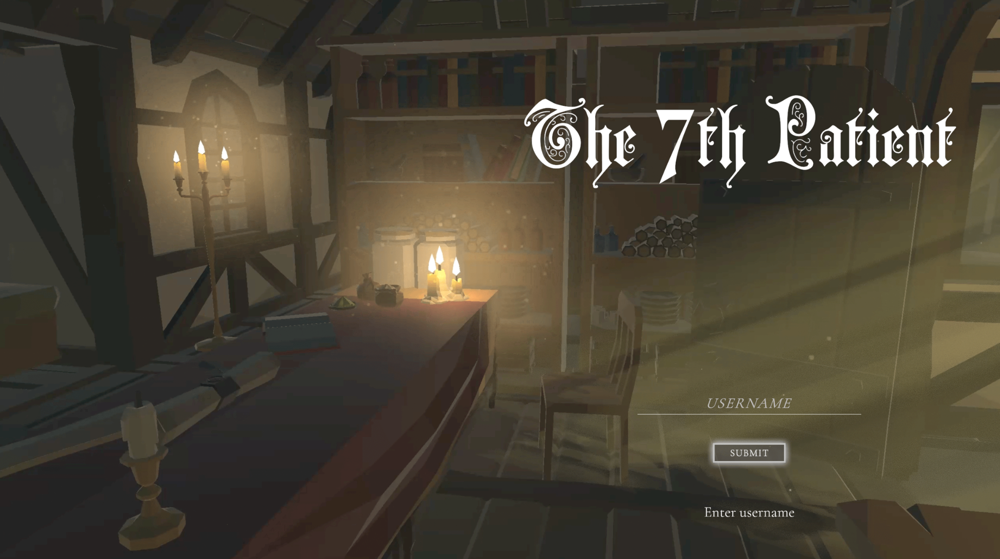

The 7th Patient
An educational game teaching high school students probability and AI through medical diagnosis.
- Role
- Game Developer, Level Design, Gameplay Engineering
- Team
- USC Institute for Creative Technologies — Human-Centered AI Lab
- Engine
- Unity
- Platform
- PC
- Genre
- Educational / HCI research

Overview
The Human-Centered AI Lab conducts research in the area of human-AI collaborative problem-solving, AI ethics and society, AI education and AI for education, trust between human and AI, and persuasive AI (Dr. Ning Wang).
Problem-solving with Probabilistic AI: The project develops an educational game, The 7th Patient, to guide high school students in learning probability and AI through problem-solving, such as making medical diagnosis. After a successful pilot with over 1000 students in Spring 2024, the full game will be released in Q2 2025.
My contributions
Game Developer · Level Design · Gameplay Engineering
Occlusion Fade System
- Designed and implemented a custom fade shader system to smoothly fade out objects blocking the camera view.
- Programmed the fade effect logic in C# and integrated it with the shader for real-time responsiveness.
- Improved player visibility and overall gameplay readability by reducing camera obstruction issues.
Minimap System
- Coded a custom minimap system displaying player position, enemy locations, and exits in real time.
- Synced the minimap with the dialogue system to dynamically update during gameplay events.
- Implemented rotation-based orientation, ensuring the minimap aligns with the player’s viewing direction for intuitive navigation.
Level Design
- Designed levels with clear player pathing, ensuring intuitive navigation and pacing.
- Strategically placed enemy spawn locations to balance challenge and maintain engaging combat flow.
- Integrated 3D environment assets to create immersive spaces that enhance both gameplay and narrative atmosphere.
Enemy Implementation
- Built enemy prefabs integrating animation graphs and scriptable objects to manage enemy data and behaviors.
- Connected enemies with a custom spawn system, ensuring controlled pacing and encounter variety.
- Synced enemy states and events with the dialogue system for seamless narrative-driven interactions.
QA
- Resolved a UI issue that caused soft locks, improving overall game stability.
- Revised and fixed dialogue flows based on professor feedback and narrative direction.
- Conducted iterative bug testing and validation, ensuring smoother gameplay and narrative consistency.
System Design
- Implemented ending flow, including ending scene and menu for smooth game conclusion.
- Integrated the ending sequence with a post-survey screen, ensuring seamless transition from gameplay to feedback collection.
- Enhanced overall game flow consistency by connecting menus, endings, and survey logic.
Results
- Piloted with over 1,000 high school students in Spring 2024.